Люди бачать предмети тому, що вони випромінюють або відображають світло. Світло можна розглядати двозначно: як потік частинок різної енергії (тоді колір світла визначає енергія частинок) або як потік електромагнітних хвиль високої частоти (у цьому випадку колір визначається довжиною хвилі). Ми розглядатимемо світло як потік електромагнітних хвиль, який після взаємодії з оточуючим середовищем попадає в око, де в результаті фізичної і хімічної реакції виробляються електроімпульси, що сприймаються мозком людини. Різна довжина хвилі сприймається людьми як різний колір (колір – це один із факторів світлового випромінювання).Видиме світло з найбільшою довжиною хвилі буде червоним (780 нанометрів), із найменшою – синім (380 нанометрів). При зміні довжини хвилі кольори плавно переходять один в одний (рис.1). Чисті кольори існують лише при певних довжинах хвилі (наприклад, чистий фіолетовий – при довжині 400 нм). Найбільш чутливе око людини до зелених кольорів (520 нм), потім до червоного і синього. У видимому спектрі людське око розрізняє 120 кольорів. За допомогою хвильової теорії, висунутої Гюйгенсом у 1678 р., було пояснено багато властивостей світла, зокрема закони відбиття та заломлення.
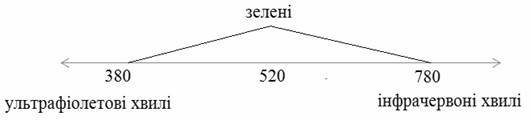
Рис.1. Чутливість ока до довжини хвилі
Коли предмети випромінюють світло (такими є монітори), вони мають той колір, який ми бачимо. Коли деякі предмети, наприклад, папір, відбивають світло, то їхній колір визначається кольором світла, що падає на предмет, і кольором, який ці предмети відбивають.
Розглянемо, як відбувається сприйняття світла людським оком. Людське око дуже складна система. Коли очі дивляться на світ – світло попадає в око через рогівку, далі за допомогою кришталика проектується на сітківку ока, де фоторецептори перетворюють світлову інформацію в імпульси у нервових волокнах. Сітківка ока містить два принципово різні типи світлочутливих рецепторів: палички, які володіють широкою спектральною кривою чутливості, внаслідок чого вони не розрізняють довжини хвиль, а отже, і кольору та колбочки, які характеризуються вузькими спектральними кривими і тому володіють чутливістю до кольору. У кожному оці знаходиться біля 6 млн. колбочок і 120 млн. паличок (приблизно 250 млн. рецепторів на два ока).
В основі трикомпонентної теорії світла лежить той факт, що в центральній частині сітківки знаходяться три типи чутливих до кольору колбочок, які відповідають за чутливість до довгих, середніх і коротких хвиль, тобто один тип колбочок реагує на зелений колір, другий – на червоний, а третій – на синій колір. Ці три кольори називаються основними (базовими).
Якщо на всі три види колбочок діє однаковий рівень енергетичної яскравості, то світло буде білим. При низькому освітленні колбочки втрачають свою чутливість, зате зростає чутливість паличок, що забезпечує нашу здатність бачити при освітленні низького рівня, тому колбочки працюють вдень, а палички – вночі.
Отже, колір – це характеристика дії випромінювання на око людини.
Слід зауважити, що колір має і психофізичну природу, тобто сприйняття кольору носить суб’єктивний характер і залежить не тільки від фізичних властивостей світла, а й від інтерпретації світла зоровою системою людини.
Кольори, що існують в природі, діляться на ахроматичні і хроматичні. До групи ахроматичних відносяться всі білі, чорні і проміжні між ними сірі кольори. Група хроматичних кольорів включає всі кольори спектру, а також кольори, яких немає в спектрі, але є результатом змішування спектральних кольорів – золотисті, тютюнові, теракотові, пурпурні і т.д. Промені світла, потрапляючи на сітківку ока, дають відчуття кольору.
Наука, що вивчає колір і його вимірювання, називається колориметрією. Вона описує загальні закономірності сприйняття кольору людиною. Основними законами колориметрії є закони змішування кольорів. Ці закони в найбільш повному вигляді були сформульовані в 1853 р. німецьким математиком Германом Грассманом.
1. Закон тривимірності. Колір виражається в тривимірному просторі. Це означає, що для його опису потрібні три компоненти. Довільні чотири кольори знаходяться в лінійній залежності. Іншими словами, для будь-якого кольору С можна записати рівняння:
C = k1C1 + k2C2 + k3C3,
де C1, C2, C3 – базисні, лінійно незалежні кольори, k1, k2, k3 – коефіцієнти, що вказують на кількість змішуваних кольорів.
2. Закон неперервності. Якщо в суміші трьох кольорів один з них змінюється неперервно, а інші залишаються сталими, то колір суміші теж змінюється неперервно.
3. Закон адитивності. Колір суміші залежить тільки від кольорів компонент і не залежить від їх спектральних складових, тобто змішувана компонента в свою чергу може бути отримана змішуванням інших компонент.
Колір може бути отриманий у процесі випромінювання та в процесі відбивання, тому існують два протилежних методи опису кольору: система адитивних кольорів і система субтрактивних кольорів. Для математичного опису кольору використовується поняття моделі кольору. Кольори в природі рідко бувають простими. Більшість кольорових відтінків утворюється змішуванням основних кольорів. Спосіб розкладання кольору на складові компоненти називається моделлю кольору. Вся безліч кольорів, які можуть бути створені в колірній моделі, називається колірним діапазоном.
Колірні моделі потрібні для математичного опису спектру кольорів, видимих на екрані монітора, або на скануючих та друкуючих пристроях. Кольори представляються моделлю як результат змішення декількох базових (основних) кольорів, з яких вони складаються. Кожен базовий колір має свій діапазон інтенсивності. При складанні всіх базових кольорів з різною інтенсивністю утворюються кольори, доступні для даної моделі. Колірні діапазони моделей можуть розрізнятися.
Адитивна модель кольору найпростіша для розуміння. Вона є досить штучним прийомом, оскільки продиктована технологією виготовлення електронно-променевих трубок. Це апаратно-орієнтована модель, в якій кольори описуються за допомогою складання трьох базових кольорів – червоного, зеленого, синього – в різних пропорціях. Тому модель RGB називають адитивною (від англ. «add» складати, додавати). Кольори також називають колірними каналами моделі RGB.
Модель названа за першими буквами англійських слів:
R (RED) – червоний;
G (GREEN) – зелений;
B (BLUE) – синій.
Кожен з базових кольорів може приймати інтенсивність (насиченість) у діапазоні від 0 до 255. Повна кількість кольорів, які представляються цією моделлю, дорівнює 256?256?256 = 16 777 216. За допомогою моделі RGB описуються кольори, що отримуються змішуванням світлових променів. Дану модель використовують монітори, телевізори, сканери, слайд-проектори, кольорові лампи реклами і інші пристрої, в яких колір виходить шляхом змішування світлових пучків. Вона також використовується для опису кольорів на сторінках Інтернету в спеціальному шістнадцятковому вигляді (#RRGGBB).
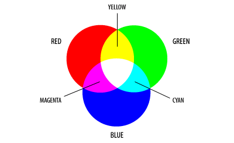
Рис.2 Комбінації базових кольорів моделі RGB
Змінюючи інтенсивність свічення кольорових крапок, можна створити велике різноманіття відтінків. Якщо інтенсивність кожного з них максимальна (255), то виходить білий колір. Відсутність всіх трьох кольорів дає чорний колір. Якщо змішуються всі кольори з однаковою інтенсивністю (але не максимальною і не мінімальною), отримуємо сірий колір.
Для зображення адитивної моделі найчастіше застосовують одиничний куб з розподілом кольорів уздовж одиничних векторів (рис. 3). Початок відліку (0,0,0) відповідає чорному кольору. Максимальне значення RGB (1,1,1) відповідає білому кольору, (1;0;0) – червоному, (0;1;0) – зеленому, (0;0;1) –синьому.
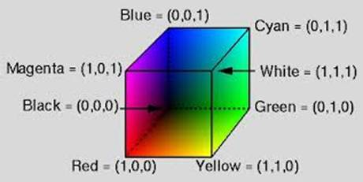
Рис. 3. Колірний куб моделі RGB
На сьогодні система RGB є офіційним стандартом. Рішенням Міжнародної Комісії з освітлення (МКО) в 1931 р. були стандартизовані основні кольори. Комісія рекомендувала використовувати як R, G, B такі монохроматичні кольори: випромінювання хвиль довжиною для R – 700 нм, для G – 546,1 нм, для B – 435,8 нм.
Недолік моделі RGB полягає в тому, що не всі кольори, утворені в ній, можна вивести на друк. Проте більше 16 млн кольорів, що представляються в RGB, виявляються цілком достатніми для практичних потреб. Іншими словами, кольори на екрані вашого монітора можуть виглядати інакше при їх виведенні на друк, причому ця відзнака може виявитися принциповою, а не обумовленою низькою якістю принтера або монітора.
Субтрактивна модель використовується для підготовки не екранних, а друкованих зображень, тобто для пристроїв, які реалізують принцип поглинання (віднімання) кольорів. Друковані зображення відрізняються від екранних зображень тим, що їх бачать не у світлі, що проходить, а у відбитому світлі, оскільки аркуш паперу не випромінює світло.
Базовими кольорами моделі CMY є кольори, які виходять у результаті віднімання основних кольорів RGB від білого. Звідси назва моделі субтрактивна (від англ. «to subtract» – віднімати). Базові кольори моделі CMY:
C (CYAN) – блакитний = білий - червоний = зелений + синій;
M (MAGENTA) – пурпурний = білий - зелений = червоний + синій;
Y (YELLOW) – жовтий = білий - синій = червоний + зелений.
Наприклад, коли на поверхню паперу нанести блакитний (cyan) колір, тоді червоне світло, що падає на папір, повністю поглинатиметься. Отже, блакитна фарба, так би мовити, віднімає червоний колір від білого, який є сумою червоного, зеленого і синього кольорів, тобто відбивається лише зелена та синя складові світла, що і дає блакитний колір. Аналогічно жовта фарба (Yellow) поглинає синій колір, а пурпурна (Мagenta) – зелений. Білий папір виглядає білим тому, що він відбиває всі кольори і жоден не поглинає.
На рис. 4 показано, як різні комбінації блакитного, жовтого і пурпурного кольорів, що дають червоний, синій і зелений кольори. Таким чином, система координат CMY – той же куб, що і для RGB, але з початком відліку в точці, що відповідає білому кольору. Колірний куб моделі CMY наведено на рис.5.
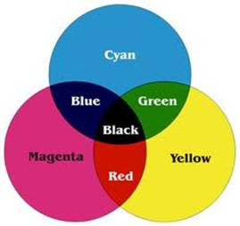
Рис.4 Комбінації базових кольорів моделі CMYK
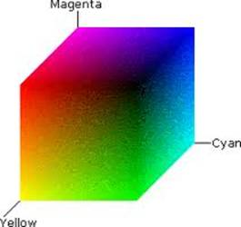
Рис. 5. Колірний куб моделі CMYK
Істотною проблемою в поліграфії є чорний колір. Теоретично його можна отримати змішуванням трьох доповнювальних фарб, але на практиці змішування цих трьох кольорів дає невизначений темно-коричневий колір. Отримати на папері чорний колір шляхом змішування трьох фарб складно і незручно через те, що реальні фарби не є абсолютно чистими, через великі витрати дорогого чорнила та високу вологість паперу на струменевих принтерах, а також через небажані візуальні ефекти, тому в принтерах до базових фарб CMY доводиться додавати ще й фарбу чорного кольору (blacK). Така модель кольору називається CMYK. При друці малюнка на кольоровому принтері з чотирма кольорами драйвер принтера перетворює RGB-малюнок у модель CMYK. Однак багато відтінків, створених в кольоровій системі RGB, не вдається передати при друці на принтері. А це означає, що колірне охоплення системи CMYK менше, ніж колірне охоплення системи RGB. Водночас варто зазначити, що лише частину кольорів, які зустрічаються в природі і сприймаються людським зором, можна відтворити на екрані монітора, тобто колірне охоплення моделі RGB вужче, ніж колірне охоплення людського ока. Як видно, жодна з моделей не є повною за колірним діапазоном.
Системи кольорів RGB і СМУК базуються на обмеженнях, які накладаються апаратним забезпеченням (моніторами комп’ютерів у разі використання RGB і друкарських фарб у разі СМУК). Більш інтуїтивним способом опису кольору є представлення його у вигляді тону, насиченості і яскравості – система НSВ (Hue – тон або відтінок, Saturation – насиченість, Brightness – яскравість) (рис. 6).
HSB не строга математична модель, але вона дуже зручна для підбору відтінків і кольорів. Ця модель заснована на моделі RGB, але має циліндричну систему координат. Будь-який колір в моделі HSB визначається своїм колірним тоном (власне кольором), насиченістю (тобто відсотком доданої до кольору білої фарби) і яскравістю (відсотком доданої чорної фарби).
Перевага НSВ перед іншими моделями полягає в тому, що вона більше відповідає природі кольору і добре узгоджується з моделлю сприйняття кольорів людиною. Тон є еквівалентом довжини хвилі світла, насиченість – інтенсивності хвилі, а яскравість – загальної кількості світла. Модель HSB відповідає поняттю кольору, яке використовують професійні художники. У них зазвичай є декілька основних фарб, а всі інші виходять додаванням до них білої і чорної. Таким чином, потрібні кольори – це деяка модифікація основних фарб: освітлених або затемнених. Хоча художники і змішують фарби, але це вже виходить за рамки моделі HSB.
Тон – це основний колір, який можна виділити в кольорі (довжина хвилі, яка переважає при випромінюванні).
Насиченість кольору характеризує його «чистоту»: чим вона більша, тим колір «чистіший» (тобто ближче до тонової хвилі). Нульова насиченість відповідає сірому кольору, а максимальна насиченість – найбільш яскравому варіанту даного кольору. Можна вважати, що зменшення насиченості відповідає додаванню білої фарби. У білому кольорі насиченість дорівнює 0, оскільки неможливо виділити його колірний тон.
Під яскравістю розуміється ступінь освітленості. При нульовій яскравості колір стає чорним. Максимальна яскравість при максимальній насиченості дають найбільш виразний варіант даного кольору. Можна вважати, що яскравість показує величину чорного відтінку доданого до кольору. Яскравість чорного кольору – 0, а білого – 1.
Графічно модель HSB можна представити у вигляді кільця, уздовж якого розташовуються відтінки кольорів. Кожному відтінку відповідає свій градус, тобто всього налічується 360 варіантів (червоний – 0, жовтий – 60, зелений – 120 градусів і так далі). На зовнішньому краю круга знаходяться чисті спектральні кольори або колірні тони (параметр Н вимірюється в кутових градусах, від 0 до 360). Чим ближче до центру круга розташований колір, тим менше його насиченість, тим він більш бляклий, пастельний (параметр S вимірюється у відсотках). Яскравість (освітленість) відображується на лінійці, перпендикулярній площині колірного круга (параметр В вимірюється у відсотках). Всі кольори на зовнішньому крузі мають максимальну яскравість.
Модель HSB не є орієнтованою ні на який технічний пристрій відтворення кольорів, тому її називають апаратно незалежною.
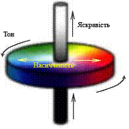
Рис. 6. Графічне представлення моделі HSB
Недолік НSВ полягає в тому, що для роботи на моніторах комп’ютерів її необхідно перетворювати на систему RGB, а для чотирьох кольорового друку – в систему СМУК.
Модель HSV створена Елві Смітом к 1978 році. Її зручно представляти у вигляді світлової шестигранної піраміди. При цьому по вертикальній осі відкладається значення V, а відстань від осі до бічної грані в горизонтальному перетині відповідає параметру S (за діапазон зміни цих величин приймається інтервал від нуля до одиниці) (рис. 7). Шестикутник, що лежить в основі піраміди, є проекцією колірного куба в напрямку його головної діагоналі. Тон кольору H задається кутом, відкладеним навколо вертикальної осі, починаючи від червоного. Точки на самій окружності відповідають чистим (максимально насиченим) кольорам. Точка в центрі відповідає нейтральному кольору мінімальної насиченості (білий, сірий, чорний – це залежить від яскравості). Тобто можна сказати, що кут нахилу вектора визначає відтінок, довжина вектора – насиченість кольору. Величина S змінюється від нуля на осі конуса, до одиниці на його гранях. Значенню V=0 відповідає вершина піраміди (чорний колір), значенню V=1 – основа піраміди; кольори при цьому найбільш інтенсивні. Точка з координатами V=1, S=0 – центр основи піраміди (відповідає білому кольору). Проміжні значення координати V при S=0 (тобто на осі піраміди) відповідають сірим кольорами, якщо S=0, то значення відтінку H вважається невизначеним, S=1, якщо точка лежить на бічній грані піраміди.
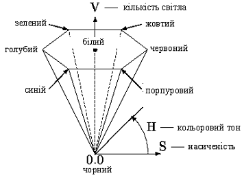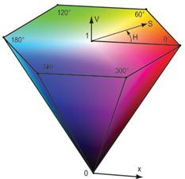
Рис. 7. Графічне представлення моделі HSV
Колірна модель HSV (тон, насиченість, значення кольору) була розроблена з метою забезпечення художника засобами інтуїтивного вибору кольору.
Розширенням колірної моделі HSV/HSB є HLS. Параметрами якої є Hue, Lightness, Saturation, відповідно: кольоровий тон, кількість світла(освітленість), насиченість (рис. 8). Різниця між моделями HSV/HSB і HLS полягає в заміні нелінійного компоненту «яскравість» на лінійний компонент «освітлення».
В основі колірної моделі HLS лежить система Освальда. Ця модель утворює простір у формі подвійного конуса. Колірний тон задається кутом повороту навколо вертикальної осі конусів. За початок відліку прийнятий синій колір. Кольори йдуть у спектральному порядку і замикаються пурпуровим. Отже, по вертикальній осі відкладається L (освітленість), а інші два параметри задаються як і в HSV/HSB. Ця модель утворює підпростір, що представляє собою подвійний конус, у якому чорний колір задається вершиною нижнього конуса і відповідає значенню L=0, білий колір максимальної інтенсивності задається вершиною верхнього конуса і відповідає значенню L=1. Максимально інтенсивні кольорові тони відповідають основі конуса з L=0,5, що не зовсім зручно. Тон кольору H, аналогічно системі HSV/HSB, задається кутом повороту. Насиченість S змінюється в межах від 0 до 1 і задається відстанню від вертикальної осі L до бічної поверхні конуса. Тобто максимально насичені кольори розташовуються при L=0,5 і S=1.
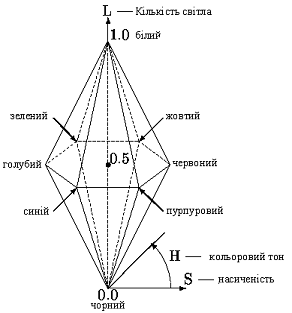 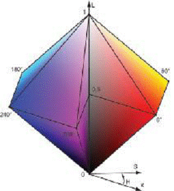
Рис. 8. Графічне представлення моделі HSLL
HSL добре пристосована для опису кольорів таким чином, як це властиво людині. Дивлячись на пофарбований об’єкт, людині простіше його описати за допомогою кольору, освітленості і насиченості, що і роблять дані колірні моделі. Безперечною перевагою даних моделей при побудові алгоритмів обробки зображень є простота розуміння, оскільки в їхній основі лежить природній і інтуїтивно близький людині опис кольору, адже саме людина в кінцевому рахунку і є розробником та користувачем цих алгоритмів.
Модель LAB базується на людському сприйнятті кольору. При однаковій інтенсивності око людини сприймає промені зеленого кольору найбільш яскравими, дещо менш яскравими – червоного кольору, і ще менш яскравими – синього. Яскравість при цьому є характеристикою сприйняття, а не характеристикою самого кольору. При розробці моделі LАВ переслідувалася мета математичного коректування нелінійності сприйняття кольору людиною.
Цій моделі віддають перевагу в основному професіонали, оскільки вона суміщає переваги як CMY, так і RGB, а саме забезпечує доступ до всіх кольорів, працюючи з досить великою швидкістю. А також вона відрізняється незвичайною побудовою, на відміну від інших колірних моделей. Побудова кольорів тут, так як і в RGB, базується на злитті трьох каналів.
Будь-який колір у колірній моделі LАВ обумовлюється параметрами L – яскравість (Lightness) і хроматичними складовими – двома декартовими координатами: а, (змінюється від зеленого до червоного, через сірий і b (змінюється від синього до яскраво жовтого через сірий) (рис. 9). L здійснює контроль за яскравістю кольорів, утворених а і b. Білий колір співставляється з максимальною інтенсивністю. L лежать в межах 0-100, а і b в межах [-200;200]. Якщо a і b рівні 0, змінюючи L, отримуємо зображення, що містить градації сірого (grayscale).
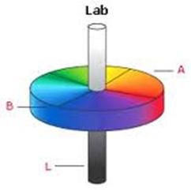
Рис. 9. Графічне представлення моделі LAB
На відміну від кольорових просторів RGB або CMYK, які є, по суті, набором апаратних даних для відтворення кольору на папері чи на екрані монітора (колір може залежати від типу друкарської машини, марки фарб, вологості повітря в цеху чи виробника монітора і його настройок), LАВ визначає колір. Оскільки, яскравість у моделі LАВ цілком відділена від кольору, то це робить модель зручною для регулювання тонової характеристики (підвищення контрасту, виправлення похибки тонових діапазонів) і видалення кольорового шуму (у т.ч. розмивка растру і видалення регулярної структури зображень в форматі JPEG), різкості та інших тонових характеристик зображення.
Враховуючи позитивні характеристики, а саме величезний колірний обхват, модель LАВ знайшла широке застосування в програмному забезпеченні для обробки зображень, через яку відбувається конвертація даних між іншими кольоровими просторами під час їх підготовки (наприклад, з RGB сканера в CMYK друкованого пристрою).
Протягом першої третини XX століття Міжнародна комісія з освітлення проводила дослідження фізіології людського зору, на основі яких у 1931 році була запропонована перцептивна колірна модель, що одержала назву XYZ.
Колірний простір моделі кольору XYZ являє собою криволінійний конус з вершиною в початку колірних координат. У міру віддалення від вершини освітлення кольорів відповідних точок, що лежать усередині цього конуса, зростає. Наведена на рис. 10 видима частина колірного трикутника в моделі кольору XYZ має форму сегмента неправильної параболи. На її криволінійній межі розташовуються спектрально чисті кольори, на прямолінійній хорді – кольори, одержані змішуванням червоного і пурпурного. При видаленні від межі фігури насиченість кольору зменшується і в центрі розташовується ахроматична точка.
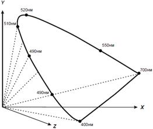
Рис. 10. Графічне представлення моделі XYZ
Оскільки працювати з об’ємним поданням колірного простору у вигляді неправильного конуса не дуже зручно, на практиці частіше користуються нормованим колірним простором, який отримав назву xyY.
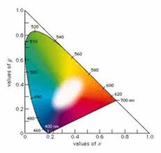
Рис. 11. Графічне представлення моделі xyZ
Ця назва пояснюється тим, що в нормованому варіанті координати х і y зберігаються, а координата z зникає, оскільки цей варіант колірного простору двомірний (колірна діаграма або локус). Вона будується шляхом проектування трикутника кольору на площину xy за формулами:
(1)
Яскравість можна отримати координатою Y, а X, Z визначити із формул:
(2)
Звичайно, на кольоровій діаграмі представлені не всі кольори простору XYZ, але для порівняння колірних обхватів і перетворення колірних просторів, заради яких і створювалася ця колірна модель, фактор освітленості відтінків можна не розглядати.
2. Перетворення моделей
Потреба перетворення зображення з однієї колірної моделі в іншу виникає досить часто, особливо якщо зображення готується для друку. До прикладу, на деяких етапах створення документа застосування колірної моделі RGB є неминучим (коли колірна модель RGB використовується сканером, цифровою камерою), але у документа, призначеного для друку, кінцевою колірною моделлю повинна бути модель CMYK. Звідси виникає необхідність конвертації моделей.
Переходи між колірними моделями завжди пов’язані з якимись втратами кольорів через невідповідність колірного простору моделей. У моделі CMYK неможливо відобразити дуже яскраві кольори моделі RGB, модель RGB, в свою чергу, не здатна передати темні відтінки моделі CMYK, оскільки природа кольору різна. На жаль, втрати, спричинені перетворенням моделей, непоправні.
Конвертування моделі RGB в будь-яку іншу колірну модель виконується після нормалізації значень її червоної, зеленої та синьої складових. Для цього значення яскравості по кожній складовій переводяться з діапазону [0 .. 255] в діапазон [0 .. 1].
Перед конвертацією значення яскравостей за червоною, зеленою та синьою складовою нормалізуються. Основний принцип перетворення моделей полягає в наступному:
C’M’Y’ = {1 - R, 1 - G, 1 - B};
K = min{C’, M’, Y’};
CMYK = {0, 0, 0, 1}, якщо K = 1;
CMYK = { (C’ - K)/(1 - K), (M’ - K)/(1 - K), (Y’ - K)/(1 - K), K}.
У ході перетворення значення яскравостей по червоній, зеленій і синій складовій, які задані в діапазоні [0 .. 1], конвертуються в модель HSB (HSV). Отримують значення в наступних діапазонах:
Н – колірний тон (0-360°);
S – насиченість (0-1);
B (V) – яскравість (0-1).
Мах – функція визначення максимуму серед трьох складових R, G, і B.
Min – функція визначення мінімуму серед трьох складових R, G, і B.
Алгоритм перетворення RGB в HSB (HSV) такий:
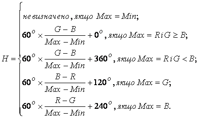 (3)
(4)
Початкові умови, діапазони змін і позначення аналогічні попередньому пункту. Алгоритм перетворення наведено нижче.
(5)
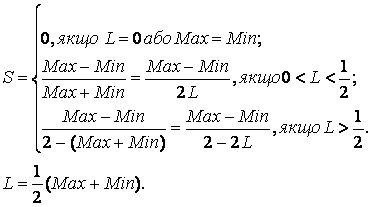 (6)
Як і в попередньому підпункті, перед конвертацією значення яскравостей по червоній, зеленій та синій компонентах нормалізуються. Основний принцип перетворення полягає в наступному (a = 0.055):
 (7)
(7)
Діапазони зміни величин є такими:
· величина H може приймати значення в діапазоні [0, 360];
· величини S, L, R, G, B – у діапазоні [0, 1].
Конвертація колірних моделей виконується згідно із такими правилами:
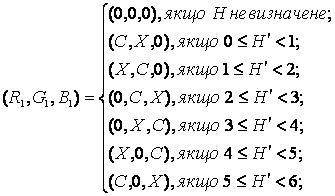 (8)
(9)
Діапазони зміни величин є такими:
· величина H може приймати значення в діапазоні [0, 360];
· величини S, V, R, G, B - в діапазоні [0, 1].
Конвертація колірних моделей виконується згідно з такими правилами:
Hi = [H / 60] mod 6;
f = (H / 60) – Hi;
p = V (1 - S);
q = V (1 - f S);
t = V (1 - (1 - f ) S);
якщо Hi = 0 => R = V, G = t, B = p;
якщо Hi = 1 => R = q, G = V, B = p;
якщо Hi = 2 => R = p, G = V, B = t;
якщо Hi = 3 => R = p, G = q, B = V;
якщо Hi = 4 => R = t, G = p, B = V;
якщо Hi = 5 => R = V, G = p, B = q.